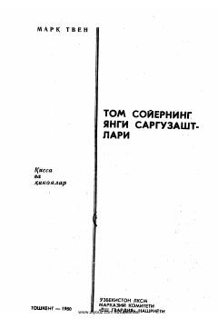

TSTom Soyer va do'stlarining havo sharidagi qiziqarli va g'aroyib sarguzashtlari.
Ushbu asarda mashhur qahramonlar Tom, Gek va Jimning havo shari yordamida Sahroi Kabir bo'ylab qilgan g'aroyib sarguzashtlari hikoya qilinadi. Kitobdan, shuningdek, yozuvchining bir qancha hajviy hikoyalari ham o'rin olgan.